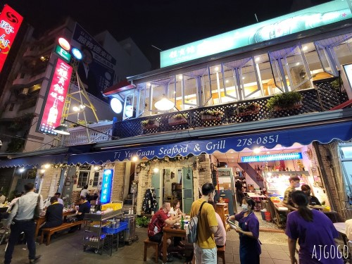
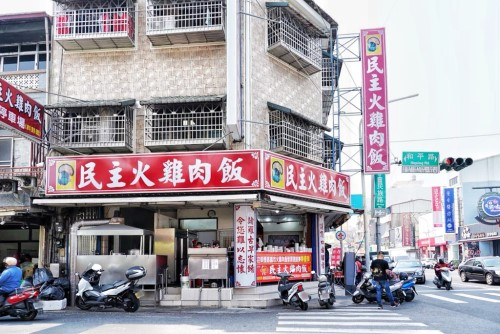
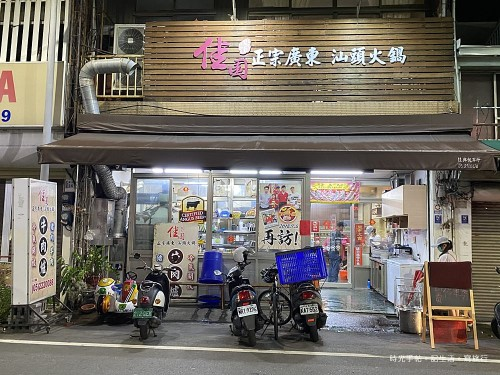

| 體育館海鮮碳烤 | |
體育館海鮮炭烤位於嘉義市，是當地相當知名的人氣熱炒與海鮮餐廳，也是許多在地人聚餐、慶生、家庭聚會及宵夜首選的熱門地點。店名因鄰近嘉義市體育館而得名，交通方便，地點也相當好找。餐廳以新鮮海產、炭火燒烤及各式台式熱炒料理聞名，菜色選擇非常豐富，像是招牌油雞飯、鹽烤蝦、金沙中卷、鳳梨蝦球、炒蛤蜊、蒜頭雞湯及烤魚等都深受顧客喜愛，不僅味道鮮美，份量也十分充足。 店內環境寬敞明亮，座位數多，整體氣氛熱鬧又有濃厚的台式聚餐感，非常適合三五好友下班後聚會，或是家庭假日一起享用晚餐。由於價格平實、食材新鮮、出餐速度快，加上服務親切，因此長年累積不少忠實顧客。尤其到了晚餐與宵夜時段，經常座無虛席，假日更是一位難求，建議事先訂位，以免久候。 對許多嘉義人來說，體育館海鮮炭烤不只是吃飯的地方，更是一種在地生活記憶。無論是想品嚐海鮮熱炒，還是感受嘉義熱鬧的夜晚氛圍，這裡都是不可錯過的美食代表之一。 地址:嘉義市東區民族路149號 、電話:05-2162666 |
 |
| 民主火雞肉飯 | |
|
民族火雞肉飯位於嘉義市，是當地非常具有代表性的在地美食之一，也是許多遊客來到嘉義必吃的經典小吃。嘉義素有「火雞肉飯之都」的美名，而民族火雞肉飯更是其中深受歡迎的人氣名店，憑藉香氣十足的火雞肉飯與親民價格，吸引許多在地人與觀光客前來品嚐。 店內招牌火雞肉飯選用新鮮火雞肉，將肉絲細緻地鋪在熱騰騰的白飯上，再淋上特製油蔥醬汁，香氣濃郁卻不油膩，口感清爽順口。米飯粒粒分明，搭配鮮嫩多汁的火雞肉，每一口都充滿嘉義在地的傳統風味。除了火雞肉飯之外，滷蛋、白菜滷、味噌湯、筍干及各式小菜也相當受歡迎，簡單卻充滿家的味道。 民族火雞肉飯的店面雖然樸實，但用餐環境整潔，服務快速，翻桌率高，即使排隊也不會等太久。許多人從小吃到大，對這裡有著深厚的情感。無論是早餐、午餐還是晚餐，都能看到滿滿人潮，是最能代表嘉義庶民美食文化的重要店家之一。 地址:嘉義市東區民族路149號 、電話:05-2162666 |
 |
| 佳園汕頭火鍋 | |
佳園汕頭火鍋位於嘉義市，是深受在地人喜愛的老字號火鍋店，也是許多家庭聚餐與朋友聚會的熱門選擇。店家主打傳統汕頭風味火鍋，以香濃湯頭和新鮮食材聞名，長年累積不少忠實顧客，在嘉義火鍋店中擁有相當高的人氣。 佳園汕頭火鍋最具特色的就是使用扁魚、蝦米與多種食材熬煮而成的湯底，香氣濃郁卻不油膩，入口甘甜順口，越煮越有層次感。搭配牛肉、豬肉、海鮮、丸類、蔬菜及手工餃類等豐富配料，每一樣都新鮮實在，特別是手切牛肉更是許多老饕推薦的必點招牌。店家的沙茶醬也是一大特色，香氣十足，與肉片搭配更能提升整體風味。 店內環境寬敞乾淨，氣氛溫馨，無論是冬天暖身還是平日聚餐都非常適合。價格合理、份量充足，加上服務親切，讓不少顧客一吃成主顧。對許多嘉義人來說，佳園汕頭火鍋不只是美食，更是一份熟悉的在地回憶。 地址:嘉義市西區新榮路269號、電話:0966989988 |
 |